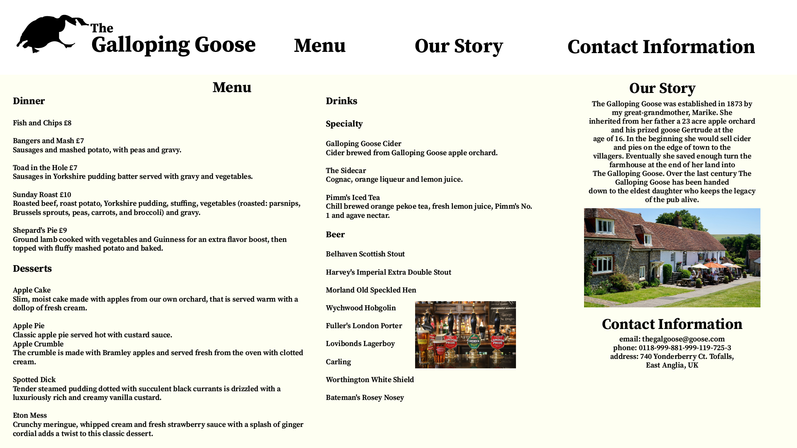

Portfolio
On Air
Directing

About Me
Hi! Welcome to my portfolio website. My name is Justin Narveson and I am currently a 4th year Journalism student at the University of Wisconsin-Eau Claire. I have a multimedia minor and this website is going to showcase what I have done in college.
I have been a part of UWEC's on campus televison station TV10> Where I have been the production director for the last two years. we have won a variety of awards from the Wisconsin Broadcasters Association in my time there. I am hoping to go into live sports production and be behind the scenes of national or local broadcasts.
Contact Me
Email: narvesjj4558@uwec.edu or jnarve38@gmail.com